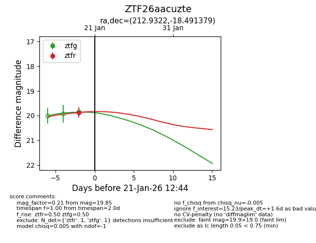
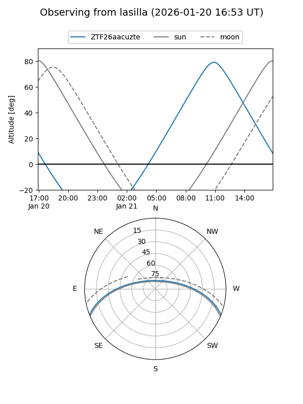
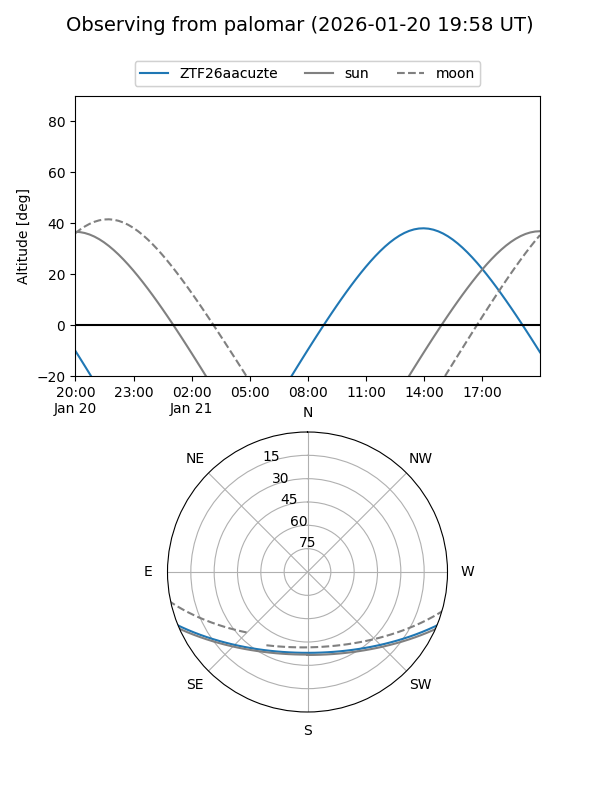
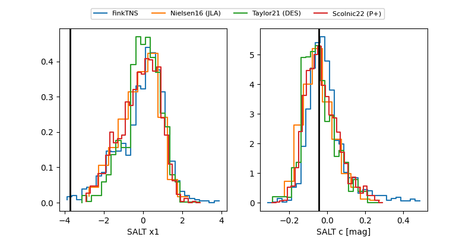

ZTF26aacuzte
Target ZTF26aacuzte at 2026-01-19 13:41
Aliases and brokers:
FINK: link
Lasair: link
ALeRCE: link
alt names
ZTF26aacuzte (ztf,fink_ztf)
Coordinates:
equatorial (ra, dec) = 212.9322,-18.49138
equatorial (HMS+DMS) = 14:11:43.73,-18:29:28.97
galactic (l, b) = (328.2364,+40.40224)
Flags:
Photometry:
last ztfg=19.85, ztfr=19.87
1 ztfg, 1 ztfr detections
Lightcurve

Visibility


Additional plots
